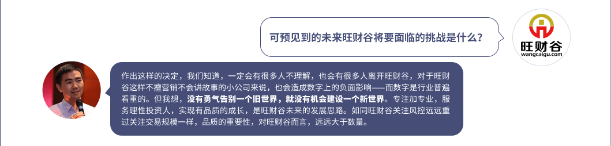
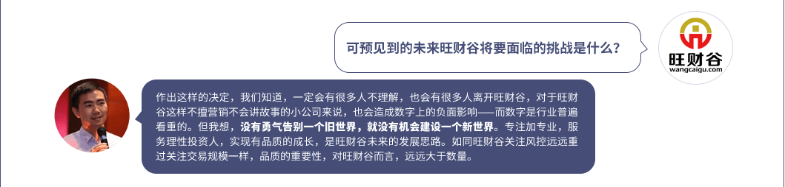

起投金额调整后，旺财谷即将推出全新的客户服务体系，为谷东提供更精细化的服务，实现谷东服务一对一，每位谷东都会拥有专属的理财顾问。
只有让平台变得更好，才能吸引更好的投资人。经过近两年的积淀，旺财谷在资产端的建设已经小有成效，并且在去年获得了有上市公司背景的瑞业基金的千万级A轮融资。随着资产端建设的逐步成熟，对资金端的细分，也就是对理财客户的重新定位与选择，势在必行。
起投金额调整后，旺财谷即将推出全新的客户服务体系，为谷东提供更...
只有让平台变得更好，才能吸引更好的投资人。经过近两年的积淀，旺...
这个调整是我们基于对市场环境的分析和自身特性的深刻认识之后做出...
“应收账款”对于普通的投资人来说相对专业。旺财谷资产端的这一特...
方女士
国家海洋技术中心 工程师王女士
某文化公司 市场经理牟女士
某体育局科长祖先生
某私营企业老板方女士
国家海洋技术中心 工程师致亲爱的旺仔们：

王女士
某文化公司 市场经理牟女士
某体育局科长祖先生
某私营企业老板 
